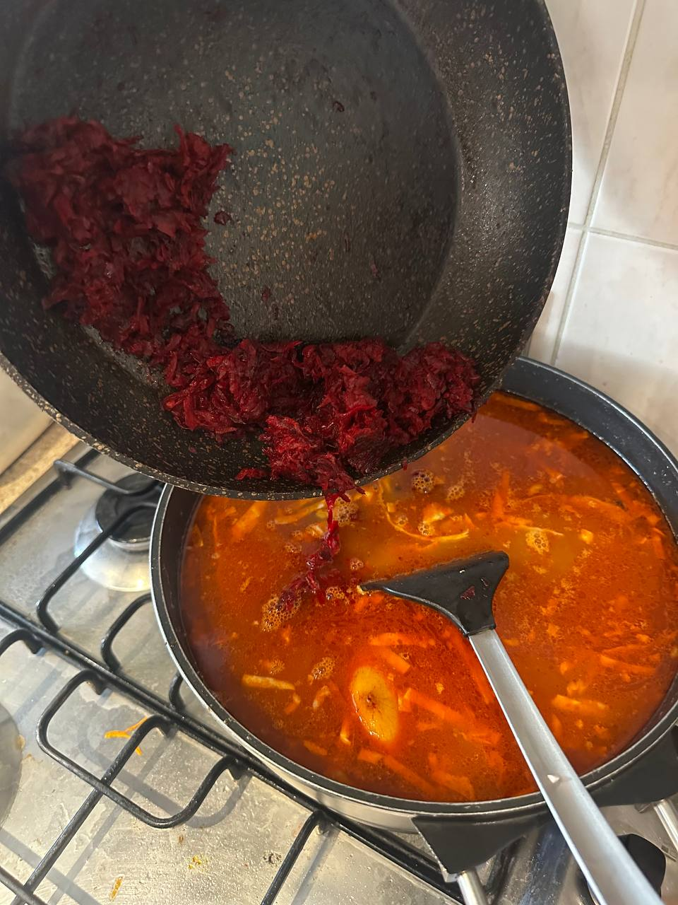
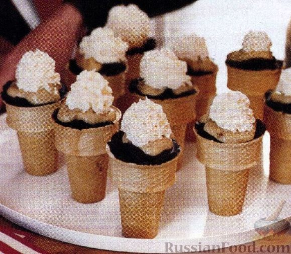
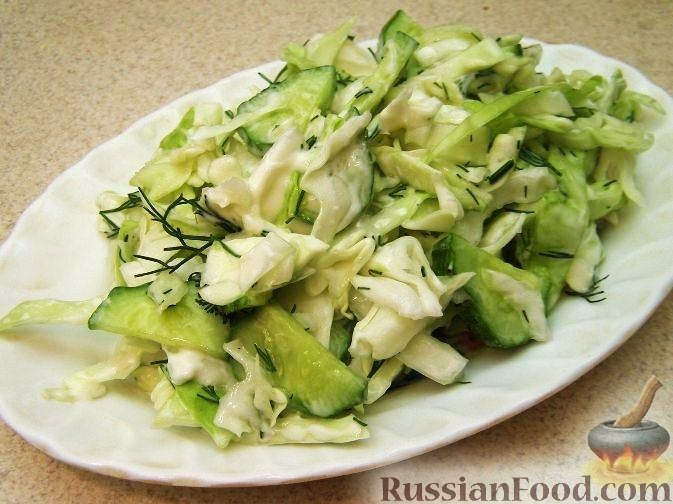
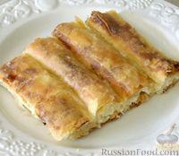
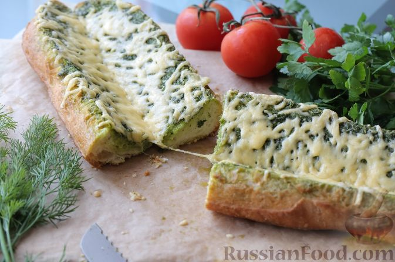

| название блюда | оценка от 1 до 10 | ссылка на рецепт | фото блюда |
|---|---|---|---|
| Борщ | 10 | Кубанский Борщ |  |
| Банановый десерт в шоколадно-вафельных стаканчиках | 7 | Банановый десерт |  |
| Салат "Пролетарский" с капустой и огурцами | 6 | Салат "Пролетарский" |  |
| Пита с сыром (тиропита) | 5 | Пита с сыром |  |
| Чесночный хлеб | 4 | Чесночный хлеб |  |